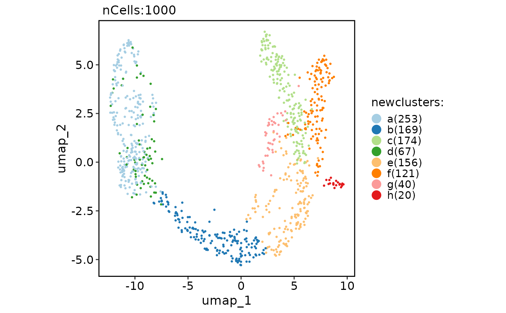
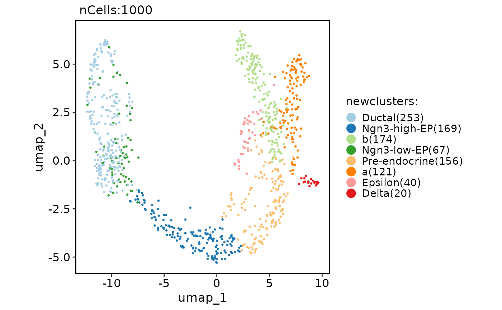
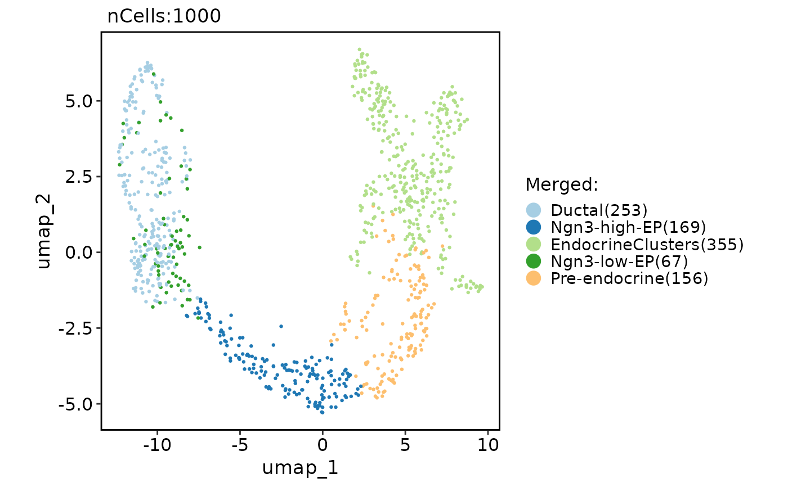

Rename clusters for the Seurat object
Usage
RenameClusters(
srt,
group.by,
nameslist = list(),
name = "newclusters",
keep_levels = FALSE
)Examples
data(pancreas_sub)
# Rename all clusters
pancreas_sub <- standard_scop(pancreas_sub)
#> ℹ [2026-01-22 03:43:25] Start standard scop workflow...
#> ℹ [2026-01-22 03:43:26] Checking a list of <Seurat>...
#> ! [2026-01-22 03:43:26] Data 1/1 of the `srt_list` is "unknown"
#> ℹ [2026-01-22 03:43:26] Perform `NormalizeData()` with `normalization.method = 'LogNormalize'` on the data 1/1 of the `srt_list`...
#> ℹ [2026-01-22 03:43:28] Perform `Seurat::FindVariableFeatures()` on the data 1/1 of the `srt_list`...
#> ℹ [2026-01-22 03:43:28] Use the separate HVF from srt_list
#> ℹ [2026-01-22 03:43:28] Number of available HVF: 2000
#> ℹ [2026-01-22 03:43:29] Finished check
#> ℹ [2026-01-22 03:43:29] Perform `Seurat::ScaleData()`
#> ℹ [2026-01-22 03:43:29] Perform pca linear dimension reduction
#> ℹ [2026-01-22 03:43:30] Perform `Seurat::FindClusters()` with `cluster_algorithm = 'louvain'` and `cluster_resolution = 0.6`
#> ℹ [2026-01-22 03:43:30] Reorder clusters...
#> ℹ [2026-01-22 03:43:30] Perform umap nonlinear dimension reduction
#> ℹ [2026-01-22 03:43:30] Non-linear dimensionality reduction (umap) using (Standardpca) dims (1-50) as input
#> ℹ [2026-01-22 03:43:34] Non-linear dimensionality reduction (umap) using (Standardpca) dims (1-50) as input
#> ✔ [2026-01-22 03:43:38] Run scop standard workflow completed
levels(pancreas_sub@meta.data[["SubCellType"]]) <- unique(
pancreas_sub@meta.data[["SubCellType"]]
)
pancreas_sub <- RenameClusters(
pancreas_sub,
group.by = "SubCellType",
nameslist = letters[1:8]
)
CellDimPlot(pancreas_sub, "newclusters")
#> Warning: No shared levels found between `names(values)` of the manual scale and the
#> data's fill values.

# Rename specified clusters
pancreas_sub <- RenameClusters(pancreas_sub,
group.by = "SubCellType",
nameslist = list("a" = "Alpha", "b" = "Beta")
)
CellDimPlot(pancreas_sub, "newclusters")
#> Warning: No shared levels found between `names(values)` of the manual scale and the
#> data's fill values.

# Merge and rename clusters
pancreas_sub <- RenameClusters(
pancreas_sub,
group.by = "SubCellType",
nameslist = list(
"EndocrineClusters" = c("Alpha", "Beta", "Epsilon", "Delta")
),
name = "Merged",
keep_levels = TRUE
)
CellDimPlot(pancreas_sub, "Merged")
#> Warning: No shared levels found between `names(values)` of the manual scale and the
#> data's fill values.
